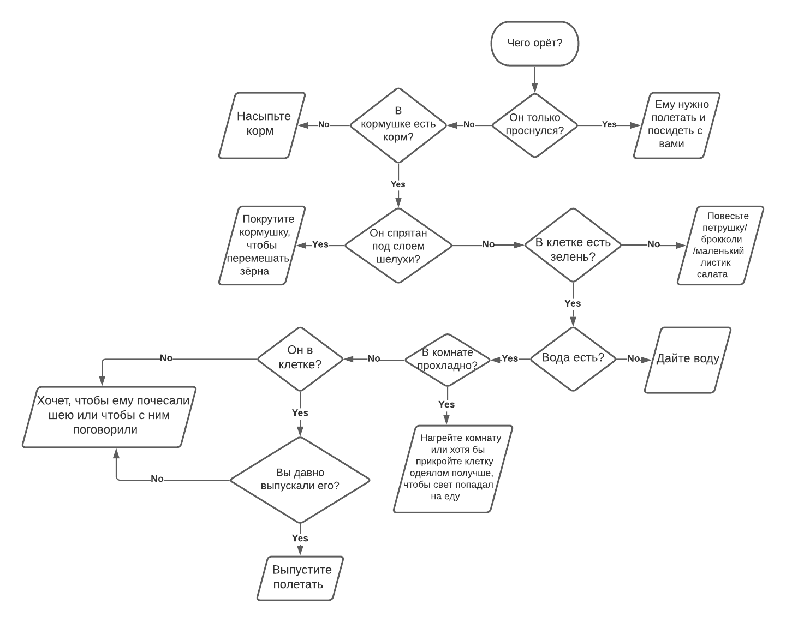
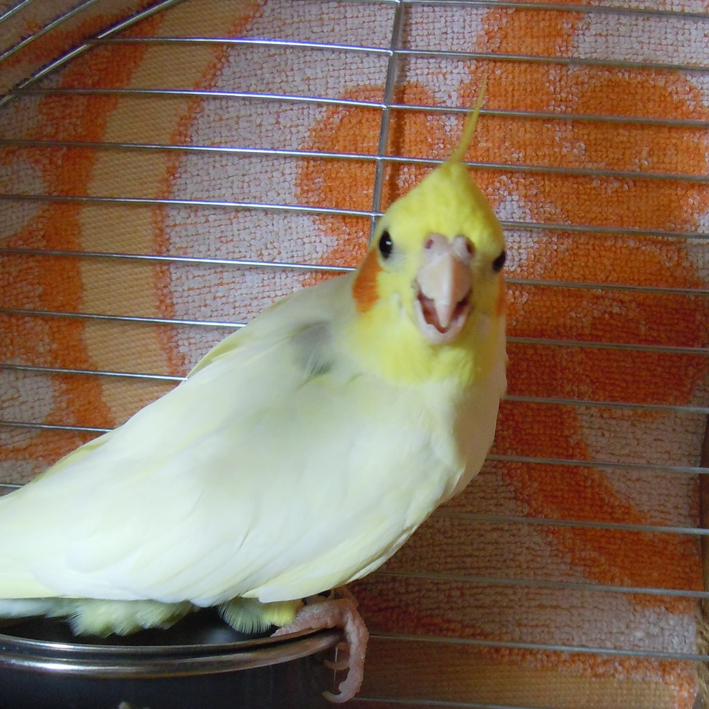
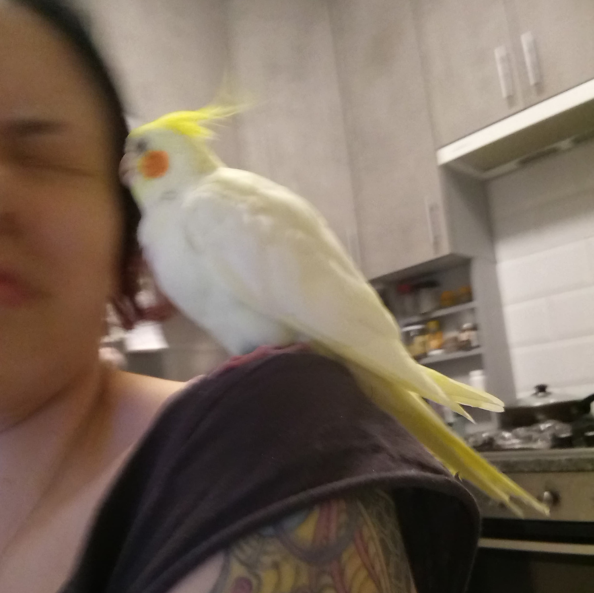

Котяпедия о Коте Лимончике
От чего держать его подальше
- АВОКАДО!!!!!!!!
- Растения
- Сквозняк
- Провода
- Родинки
- Открытые окна без сетки
Клетка
- Утром нужно выпускать его из клетки полетать хотя бы на 10 минут
- Поддон мыть каждые 2-3 дня
- Клетку - каждую неделю-две
- Кормушку металлическую для корма вешать выше жёрдочки, чтоб он не ходил в неё в туалет
- Кормушку пластиковую с влажной едой вешать в правый нижний угол
- Оставлять с одной стороны жёрдочки больше места, чтобы ему хватало места расправлять крылья
- Игрушки вешать ближе к краям клетки, чтобы Котя по жёрдочке свободно перемещался
- Оставлять одеялко на задней стенке клетки, Коте нравится, чтобы был уголок, да и ваши стены будут чище.
- Водичку в поилке менять каждый день
- Если он нагадил в еду или воду, нужно сразу помыть
Кушенькать
В металлическую кормушку насыпАть столовую ложку корма без горки, чтобы корм одним слоем покрывал дно. Иначе Котя начинает кипишевать, что еда закончилась, не зная, что ниже ещё куча всего. Наперёд (2-3 ст.ложки) насыпайте, если вас весь день не будет. В идеале у него в клетке должно быть 5 видов фруктов/овощей всегда, но то такое. Обычно у него висят сухофруктики, корм, иногда чумиза + раз-два в день вешаю маленькое соцветие брокколи или пучок петрушки. В остальном остаётся только корм менять. Морковку, кукурузу и прочее, влажный корм и всё, что трудно прищепкой прицепить**, нужно кидать в серую кормушку.
Его минимум на день это палочки петрушки, два сухофрукта в клетке и 4 ст.л. корма. Если уходите с утра и возвращаетесь поздно, оставьте ещё какой-нибудь овощ на прищепке и разморозьте ещё ему перед уходом 1 ст.л. пшеницы с горошком и кукурузой и оставьте в серой кормушке.
Нужно обязательно каждый день менять воду, предварительно помыв поилку.
Низя
- Жареное
- Солёное
- Копчёное
- Консервированное
- Всё, где есть сахар и мука
- АВОКАДО!!!!!!!!!
- Белокачанная капуста
- Картошка
- Помидоры
- Имбирь
- Чеснок
- Лук
- Шпинат
- Чечевица
Низя, но, если очень просит, то можно
- Несколько крошечек хлебушка
- Пара крошечек печеньки или пироженка
Можно
- все ягоды***
- тыква*
- тыблоко*
- морковка**
- груша*
- огурчик*
- салат
- арбуз
- чуть-чуть дыни
- виноград (обожает палочки и маленькие виноградинки, большие - тоже, но трудно ему их раскусить), только не больше 4-х виноградин
- укропа листики (палочки не любит)
- палочки петрушки (листики не любит особо)
- брокколи
- гранат***
- грейпфрут и апельсин (любит их есть засушенными)
- сладкий перец (в основном ест хвостик с семечками)
- горошек
- кабачки
- замоченные крупы (пшеница, гречка, пшено, киноа)
- кукуруза
- семечки (лён, подсолнечные, тыквенные, чиа, кунжут)
- свёкла**
- персик
- листья салата
- нектарин
* отрезанной дольки в 0,5 см достаточно
** мелко тёртая
*** обязательно кинуть в кормушку пластиковую
Лакомства
- Чумиза
- Смесь семок
Коммуникация
Не надо
- Трогать руками что-либо (особенно лапы - проклянёт) кроме головы и шеи (в крылышко можно только носом ткнуть легонько, ему нравится).
- Пытаться его почухать, когда он чистит перья
- Лезть к нему в клетку руками без необходимости сменить воду/еду или словить его, когда он испугался и начал метаться по клетке
- Двигать клетку, в которой он спит под одеялом
- Накрывать его, как только он начинает кричать (он потом будет орать без разбора)
- Хватать (если только он не вымазался во что-то и его нужно вытереть)
Любит
- Когда ему чешут шею, лоб, брови и иногда даже клювик
- Когда ему поют
- Играть в прятки и догонялки
- Спокойную музычку, в особенности голос Лето-младшего
- Этот плейлист
Уход
Спать

Он так может отдыхать и днём, но обычно таким сонным бывает к вечеру (или весь день, когда болеет). Спать ему нужно 12 часов. Спустя 10 часов он уже может проснуться и в накрытой клетке искать корм. Обычно находит, покушает и дальше сидит. Иногда может относительно громко подавать признаки жизни при накрытой клетке. Это значит, что:
- Сильно выспался
- Сильно голодный/корм не нашёл
- Клетка накрыта недостаточно плотно и туда попадает много света
Поэтому, нужно накрывать клетку почти полностью, оставляя 4-6 прутиков снизу открытыми, чтобы воздух поступал, и укладывать его спать из расчёта на то, когда вы будете просыпаться. То есть, например, обычно я его укладываю в 10 вечера, чтобы немного отдохнуть от него, и убираю покрывало в 10 утра, проснувшись в 9-10.
Купаться

Когда дома тепло/жарко: Можно попробовать побрызгать его водичкой или усадить в душ, но к душу он будет долго привыкать. Поэтому нужно ему иногда вешать купалку из расчёта на то, чтобы вода не вылилась, когда он туда залезет. Если вы уходите надолго днём, обязательно повесьте купалку сбоку, чтобы он мог освежиться, если будет жарко. Когда дома холодно: купаться нельзя.
Здоров'ячко и Поведеньичко
Чего орёт?
- Хочет полетать
- Хочет, чтобы с ним потрындели
- Не видит корм, так как верхний слой - шелуха, или просто темновато
- Хочет посидеть в тишине, а вы чем-то стукаете (даже если вилочкой по тарелке)
- Просто хочет посидеть рядышком
- Корма наелся, а зелени нет
- Хочет, чтобы шею почесали (ещё кряхтит немного в таких случаях)
- Хочет, чтобы им полюбовались
- Хочет, чтобы за ним погонялись
Если в клетке есть еда и летать он не особо желает, можно пять-десять минут с ним потусить активно, усадить в клетку и он будет себя тихо вести.
Если активно разговаривает, то с ним можно минут 5 потрындеть или даже попытаться поучить его одному и тому же слову, и он успокоится.
Остальное
- Поранился
- Чтобы остановить кровь - в коробке с мирамистином есть ампула дицинона. Для обработки ранки - мирамистин.
- Распушился
- Если целый день вялый и распушённый и нахохленный, то он приболел. Но если совсем недолго - расслабился.
- Скрипит клювом и прикрывает глазки
- Он расслабился и доволен. Если это вечер, то спать уже хочет.
- Покусывает ушко
- Если в той части нет родинок, наслаждайтесь, это массаж
- Открыл клюв, широко раскрыл крылья, высунул язык и часто дышит
- Ему жарко. Нужно срочно убрать его от источника тепла и обрызгать водичкой или поставить купалку (иногда это выглядит красиво как на фото, это ему было просто жарковато)))
- Хохолок прижал, клюв открыл, шипит 
- Щас грызанёт, уберите руки
- Тыкает головой в руку/сел рядом и наклонил голову
- Чешите голову и шею. Он сам подставляет голову так, чтобы вы знали, где чухать
- Сел на голову
- В принципе, если вы сегодня собираетесь мыть голову, наслаждайтесь массажем. Может начать орать, так как забыл, что человек находится прямо под ним. Если только голову помыли, снимайте его немедленно.
- Пытается съесть ваш глаз 
- Ему нравятся реснички, а зрачок он считает зёрнышком. Просто отодвиньтесь от греха подальше.
- Клюёт, хотя сам попросил почесать голову
- "Вони самі не знають, шо вони хочуть". Уберите руку, пока сам не начнёт крякать вам на ухо.
- Прилетает сам и начинает атаковать, когда вы чуть шевельнётесь
- Эту хрень я так и не разгадала, можете усадить его в клетку или погоняться за ним. Если он прям нападать начинает без повода, подойдите с ним на плече к клетке и пусть посидит там. Если залезет в клетку - закройте, пусть успокоится. Прилетит снова и опять будет атаковать - прогоняйте, пусть сидит на клетке сам в таком случае.
- Вялый, не реагирует, когда ты заходишь в комнату, почти весь день сидит улиточкой/нахохленный/спит
- Заболел. Если помёт жидкий или в нём непереваренные зёрнышки, нужно заварить ромашковый чай, остудить налить в поилку пополам с водой, повесить петрушку и досыпать глины (раскрыв капсулу) прям поверх корма и пару капсул в поилку. Если он и не ест, нужно высыпать из капсул глину, чуть развести водой, набрать в шприц (лежит в коробке с мирамистином), взять Котю в полотенце и, держа его вертикально по чуть-чуть споить раствор глины. Он будет закрывать клюв, но его можно приоткрывать шприцом самим аккуратно. Такое было только пару раз, он не сопротивляется практически и не клюётся, так как плохо себя чувствует. Поэтому главное аккуратно держать его в полотенце, но чтобы он не мог выпутаться. Когда споите ему весь шприц, можно оставить его на 2-3 часа в покое в клетке и потом снова дать глину.
- Резко улетел на своё место/надулся/оттопырил хвост
- Он так готовится к походу в туалет. Дайте семку, если он правильно сходил в туалет (= не на вас или какую-то ткань). Если видите, что надулся, а вы успеваете медленно отвести руку, чтобы он не попал на вас, так и делайте.
- В помёте непереваренные зёрнышки/помёт постоянно жидкий
- Дать глину, петрушку и ромашковый чай добавить в воду